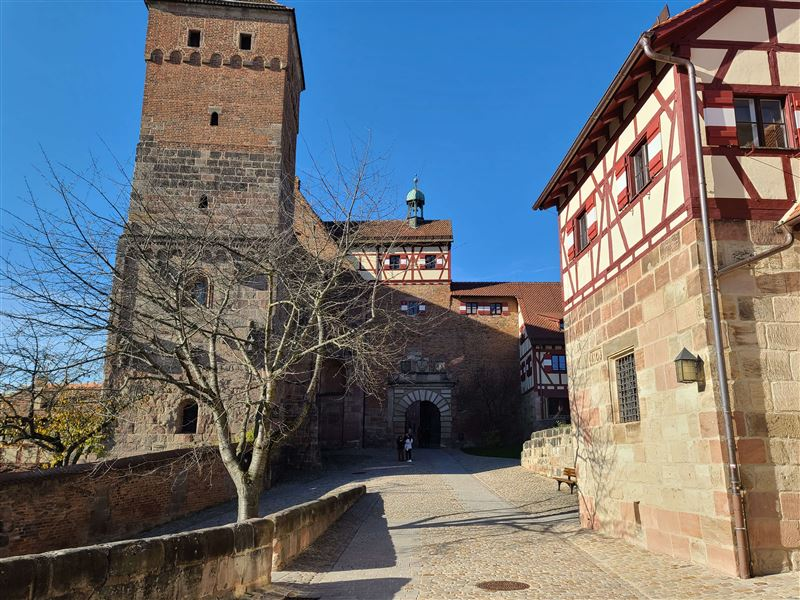
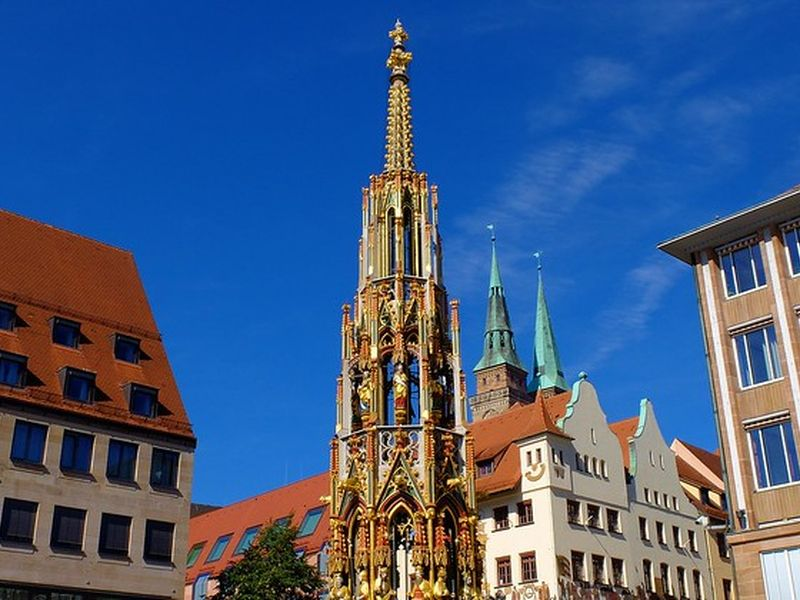
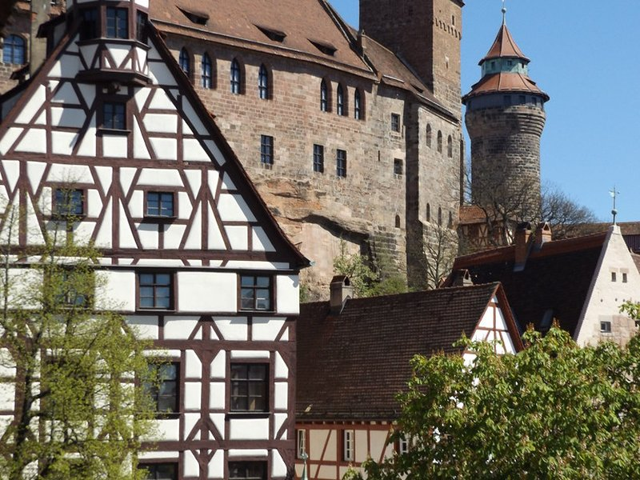
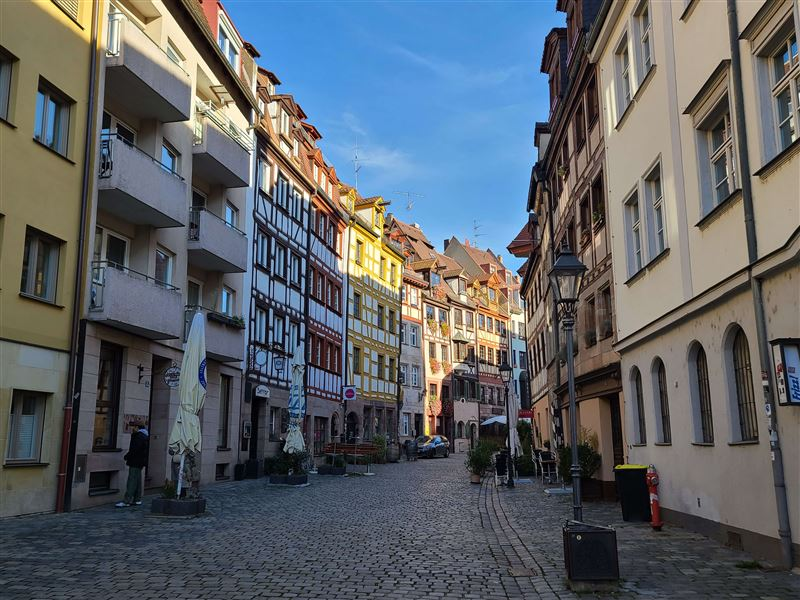
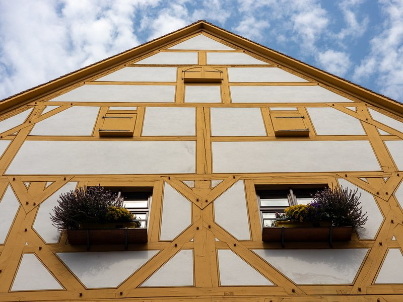
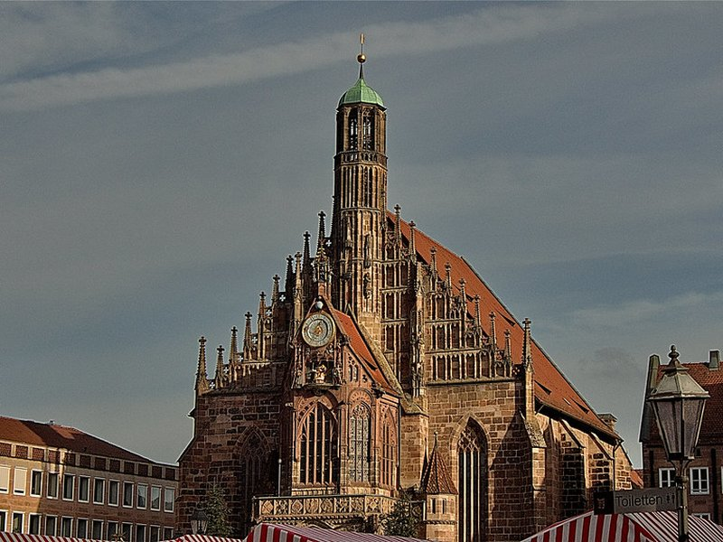

Explore Nuremberg
A Brief History
Nuremberg (Nürnberg), once the powerful unofficial capital of the Holy Roman Empire, was a vibrant, wealthy center of the German Renaissance, home to brilliant historical minds like Albrecht Dürer. Known for its imposing, hilltop Imperial Castle, the city's rich history was tragically hijacked by the Nazi regime for their massive rallies, and later severely bombed. Today, Nuremberg has beautifully and painstakingly reconstructed its medieval core, serving as a powerful global symbol of human rights, post-war reconciliation, and a proud guardian of deep Franconian heritage.
Attractions Map
Top Sights & Activities

Nuremberg Castle (Kaiserburg)
Nuremberg Castle, or Kaiserburg, is an iconic symbol of the city, representing centuries of history and architectural splendor. As you step into the castle grounds, you’ll be greeted by its formidable walls and stately towers, which have stood sentinel over Nuremberg since the medieval era. It’s the perfect place to start your day in Nuremberg.

Hauptmarkt and Schöner Brunnen
The Hauptmarkt, or main market square, is the beating heart of Nuremberg, surrounded by historic buildings and bustling with activity. This vibrant square hosts a variety of market stalls selling fresh produce, local delicacies, and handicrafts, making it a great place to sample traditional Bavarian fare and pick up unique souvenirs. The square also hosts the famous Christkindlesmarkt during the Christmas season, one of the most renowned Christmas markets in Germany.

Albrecht Dürer’s House
Albrecht Dürer’s House, located in the charming old town of Nuremberg, is a lovingly preserved half-timbered house where the renowned Renaissance artist lived and worked from 1509 until his death in 1528. Entering the house is like stepping back into the early 16th century. The ground floor features the artist’s workshop, where you can witness printing demonstrations and learn about the techniques Dürer used to create his masterpieces.

Germanisches Nationalmuseum
The Germanisches Nationalmuseum is the largest museum of cultural history in the German-speaking world, housing an extensive collection of artifacts that span from prehistoric times to the modern era. With over 1.3 million objects, the museum offers a comprehensive overview of Germanic cultural history, making it a treasure trove for history and art enthusiasts. The museum’s exhibits include a vast array of items such as ancient tools, medieval armor, Renaissance paintings, and modern sculptures.

Weissgerbergasse
Weissgerbergasse is one of Nuremberg’s most picturesque streets, lined with beautifully preserved half-timbered houses that date back to the medieval period. Walking down this cobbled street, you’ll feel as though you’ve stepped into a fairy tale. The street’s name translates to “Tanners’ Lane,” reflecting its historical association with the leather tanning trade.

Nuremberg Frauenkirche
The Nuremberg Frauenkirche, or Church of Our Lady, is a stunning example of Gothic architecture located on the eastern side of the Hauptmarkt. Built in the 14th century by Emperor Charles IV, the church is renowned for its beautiful façade, adorned with intricate sculptures and ornaments. One of its most captivating features is the mechanical clock, the Männleinlaufen, which performs a charming spectacle every day at noon.